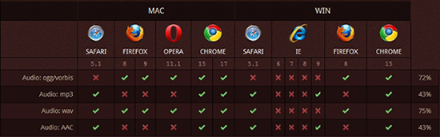
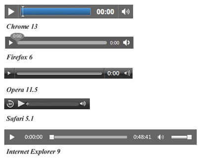

HTML5 에서의 새로운것 중 하나가, 음성 및 영상이 플러그인 플레이어가 필요하지 않은 하나의 태그로 가능하게 구현되었다는 점 입니다.
물론 포맷이 뭐냐에 따라 브라우저 마다 보이는 것이 다르긴 하지만, 플러그인 설치 없이 바로 재생이 된다는 것이 많은 발전이 아닌가 싶습니다. 여러 플레이어들의 설치 없이 멀티미디어 부분을 웹의 표준 방식으로 만들기위함 인듯합니다.
웹 상에 멀티미어어의 부분이 그만큼 중요해 졌다는 얘기겠죠.
* 플레이어 - 미디어플레이어, 퀵타임, 리얼플레이어, 실버라이트, 플래쉬 플레이어등.
* 포맷 - 파일의 형식, wav, mp4, mkv, mov, flv, mp3등.
현재는 여기에 재생되기위한 조건이 필요한데, 브라우저별 지원 여부가 중요합니다. 각각 브라우저의 지원 형식이 다르기 때문입니다.
인터넷 익스플로러 9 이상, 파이어 폭스, 오페라, 크롬, 사파리는 지원하지만, 인터넷 익스플로러 8 및 이전 버전은 지원하지 않습니다.
앞으로는 모든 브라우저에서 지원이 가능해 지겠지만, 웹 표준이 정착되기 까지는 시간이 좀 걸리겠죠. 지금 사이트및 홈페이지를 만들어야한다면 웹 표준을 준수하여 구성하는것이 앞으로의 웹에 대한 준비가 되겠죠.
<audio src="파일주소">지금의 브라우저는 오디오를 지원하지 않습니다.</audio>
이렇게 간단한 방법으로 오디오를 웹페이지로 넣을 수 있습니다. '오디오를 지워하지 않는다'는 글은 <audio></audio> 사이에 있어야 합니다.
오디오 태그는
src="파일주소",
controls(재생 컨트롤 표시), loop(반복), autoplay(자동재생) - true/false 선택,
preload(미리 오디오를 읽어올지 설정)
- auto(미리 읽어옴), metadata(크기,프레임,리스트,길이), none(안가져옴)
사용 예 - <audio src="" controls="" loop="" autoplat="" preload=""></audio>
- controls, loop, autoplat 은 "" 없이도 사용가능합니다.
(적으면 true, 안적으면 false)
이런 속성이 있습니다.
하지만 브라우저 마다 지원하는 코텍이 달라서 웹 표준을 준수 하였어도 오디오가 나오지 않는 경우가 생깁니다.
브라우저별 지원 여부입니다.

위부터 ogg,mp3,wav,aac 입니다. aac는 거의 사용되지 않습니다. ogg,mp3,wav 세가지 형식을 사용합니다.
익스플러러 8 이하는 지원이 안됩니다. 브라우저 마다 틀리죠?? 그럼 브라우저 한개 쯤은 포기할까요?? 흠.. 안되겠죠?? 이때 여러가지 브라우저를 지원하기 위해 <source> 태그를 사용 합니다.
<audio>
<source src="파일주소" type="마임타입">
<source src="파일주소" type="마임타입">
지금의 브라우저는 오디오를 지원하지 않습니다.
</audio>
* 마임타입(MIME-type) - MIME(Multipurpose Internet Mail Extensions)
- 멀티미디어 테이터를 전자우편으로 송신하기위한 전송 프로토콜(웹에 최적화시킨 타입 정도?)
- 태그에서 마임타입 입력은 mp3("audio/mpeg"), ogg("audio/ogg"), wav(audio/wav") 입니다.
'mp3+wav' 혹은 'mp3+ogg' 조합이면 다 지원이 되겠네요. 크롬은 다되는군요.
사용 예
<audio src="" controls="" loop="" autoplat="" preload="">
<source src="" type="">
<source src="" type="">
지금의 브라우저는 오디오를 지원하지 않습니다.
</audio>
브라우저별로 모양도 다릅니다.
